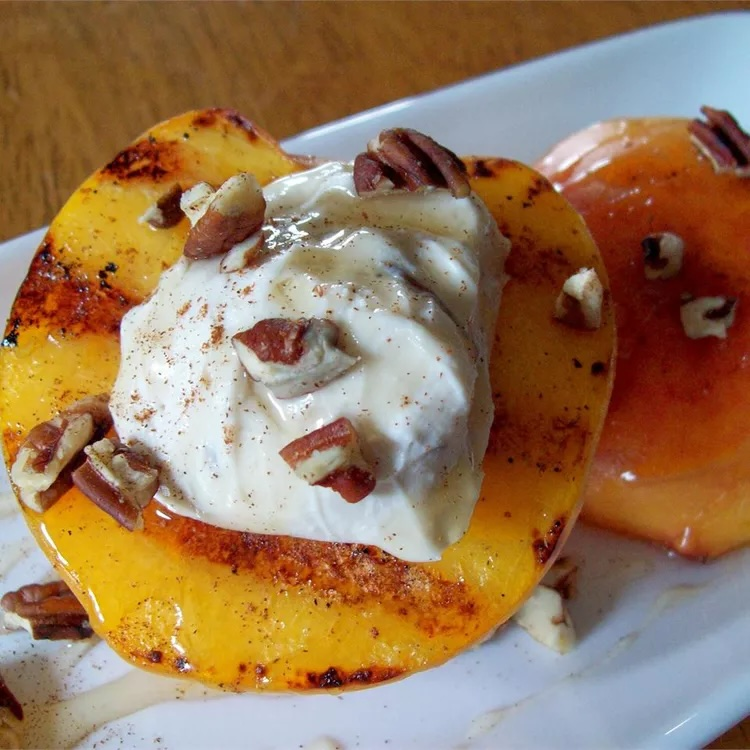

Grilled Peaches and Cream

Description
This is a sweet and easy dessert thats sure to be a favorite!
The honey nut flavor mixed with the juicy grilled peaches is a wonderful combination! Drizzled with a little extra honey after they are grilled and they are perfection!
Ingredients
- 4 peaches, halved and pitted
- 2 tablespoons clover honey
- 1 cup soft cream cheese with honey and nuts
- 1 tablespoon vegetable oil
Steps
- Preheat a grill for medium-high heat.
- Brush peaches with a light coating of oil.
- Place the peaches pit side down onto the grill. Grill for 5 minutes, or until the surfaces have nice grill marks.
- Turn the peaches over, and drizzle with a bit of honey.
- Place a dollop of the cream cheese spread in the place where the pit was.
- Grill for 2 to 3 more minutes, or until the filling is warm.
- Serve immediately!